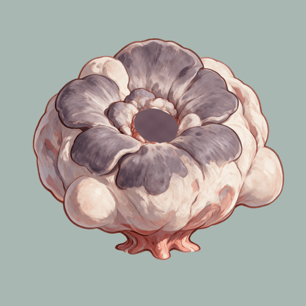
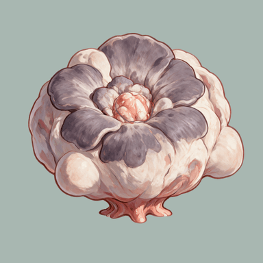

384px full canvas, approximately320px visible body. Base and detached seed are actual saved GIFs; the base root stays planted while the petals and side sacs deform.


Four actual independent state layers over the base